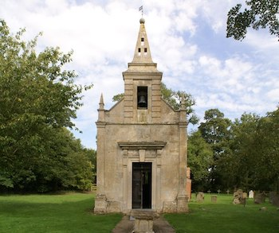
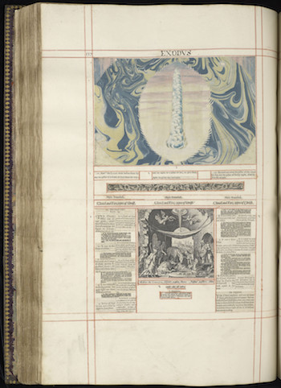
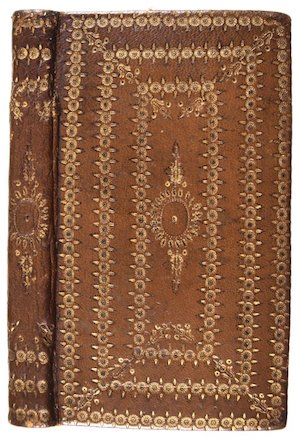

Susanna Collett née Ferrar (1582-1657) was born into a family of London merchants. Early in the seventeenth century, the Ferrars were active in the Virginia Company, chartered in 1606 to colonize North America. Susanna’s brothers John Ferrar (1588-1657) and Nicholas (1592-1637) were especially instrumental in managing the Company under Edwin Sandys.
In 1600, Susanna married John Collett (1572-1650), a London merchant possibly of French Huguenot extraction. John and Susanna lived in London, where, over the course of fourteen years, they had ten children together. In 1614, John purchased Bourn Manor near Caldecot and relocated his growing family to the countryside to practice farming. It was around this time that Susanna’s daughter Joyce was born, probably in Bourn, where she was baptized on March 6th, 1614. Five more children would be born to John and Susanna Collett at Bourn over the next decade, making Joyce the eleventh child of fifteen birthed by Susanna between 1600 and 1622.
In 1625, Susanna’s mother Mary Ferrar (1551-1634) bought the crumbling manor at Little Gidding, with her son Nicholas Ferrar and nephew Arthur Woodnoth serving as trustees of the property. The purchase signaled the Ferrar family’s desire to escape London. By 1624, the Virginia Company had collapsed, losing its subscribers significant amounts of money, and the brothers Nicholas and John were weary of the endless political maneuvering and management. Retreat from the city brought with it a new opportunity to recommit to a simpler life ordered around religious principles. Nicholas, unmarried at thirty-three years old, especially relished the idea of intentional, communal living and invited members of the extended family to join him and his mother at Little Gidding.
Susanna and John Collett responded to Nicholas’s call and around 1625 moved their by then very large family about twenty-five miles north from Bourn to Little Gidding. Nicholas’s brother John Ferrar and his wife Bathsheba, with their young children, joined them, too. The first several years were spent restoring the property: sweeping hay and animal dirt out of the chapel, cleaning out the house, building gardens, and making space for the forty or so people who lived and work on the estate. By 1630 or so, the household was established enough to develop the more elaborate religious practices that would come to define Little Gidding, as well as the Ferrar and Collet families that lived there.
The household at Little Gidding aimed to be “a pattern for an adge [sic] that needs patterns,” as Susanna’s brother Nicholas Ferrar put it. They did so by practicing a rigorous schedule of collective devotion. Members of the extended Ferrar and Collet families recited from the Bible at appointed hours throughout the day, dividing it such that they read the entire psalter every month and the books of the Four Evangelists three times a year. They compiled a hymnal and sang together in the morning and evening, clustered around an organ installed in their home for this purpose. During meals, children read aloud from history books or John Foxe’s Book of Martyrs to practice their elocution and edify the family. Psalms were especially important at Little Gidding, and the family supplied neighboring children in the parish with a psalter, offering a penny to each “psalm-child,” as they were called, who could recite passages from memory on Sunday mornings.
Most remarkably, Susanna Collet and her daughters spent their afternoons in Little Gidding’s Concordance Room, a kind of early modern makerspace or collaboratory. There, they cut apart printed Bibles and engravings and pasted the pieces back together into elaborate configurations, which they then bound in beautiful velvet or leather covers. Many of these cut-and-paste volumes are known today as “gospel harmonies.” These remix the books of Matthew, Mark, Luke, and John into a single chronological narrative of Christ’s life and teachings, divided into 150 discrete episodes. In effect, the household was “translating” into English an earlier Latin harmony, Cornelius Jansen’s Concordia evangelica (1549), using scissors, knives, and paste. The household also designed Pentateuch harmonies for Archbishop William Laud and Prince Charles and made an illustrated version of Acts and Revelations, among other cut-and-paste books.
In addition to making the harmonies, the women bound books printed at Cambridge, including copies of their friend George Herbert’s The Temple, which the Ferrars helped publish posthumously, and copies of the Bible. The Collet sisters were primarily responsible for this labor, including the eldest Mary and Anna — already thirty and twenty-seven when they began making books around 1630 — the teenagers Joyce (age 16) and Hester (age 14), Margaret (age 12) and young Judith (age 8).
The Collet sisters, as well as their parents Susanna and John, their grandmother Mary, and their uncles Nicholas and John also participated in what the household called the Little Academy. Operating somewhere between a collaborative oral reading, an informal conversation, and the private performance of a closet drama, the Little Academy met semi-regularly in the Great Chamber to relate and discuss “diverse religious exercizes,” as the young women called them, the purpose being to “intermingle the study of wisedome, searching and enquiring diligently into the knowledge of those things that appertain to their Condition and Sex.” Each of the younger participants assumed an allegorical title in the dialogues — the Affectionate, the Patient, the Cheerful, and so on — with their names ironically signalling that trait in which their bearers most needed improvement.
Because the dialogues encouraged different readings, opinions, and reactions to be aired in relation to neutral historical or scriptural events, they offer a glimpse into the processes by which the community managed and mediated discord. One episode in particular offers a glimpse into the character of the teenage Joyce and her relationship with her parents Susanna and John. Toward the end of an extended monologue on Charles V’s decision to retire from public life, Mary Collet launches into a digression on the evils of ostentation. Men keep fancy coaches and a large retinue of servants, she rails, just to make themselves seem more important; to pursue such vanities for one’s own glory takes away from the honor that is properly due to God. As she speaks, her voice rises “with more than Vsual Vehemency both in Speech & Gesture” until she notices “the Eys of the whole Company” turned upon her and begins to blush. To calm Mary’s nerves, her sister Anna, “the Patient,” kisses her and praises her speech before their mother Susanna, “the Moderator,” pipes in to commend them both for offering such good counsel — counsel, she says portentously, that the entire company should follow.
And now the underlying reason for Mary’s tirade emerges: her younger sister “the Submisse” — probably Joyce — wants to leave Little Gidding and become a lady-in-waiting to a noble family. At this point, the girl’s mother Susanna (“the Moderator), father John (“the Resolved”), and uncle Nicholas (“the Guardian”) pile on with complaints about the Submiss’s ironic unwillingness to submit: she refuses to wear the humble habit that her sisters wear, nor will she relinquish her social ambitions. As the parents and uncle begin debating amongst themselves about her conduct in front of the rest of the company, the modern reader feels a certain sympathy for the rebellious teenage Joyce, whose reactions go unrecorded. Eventually the conversation broadens into a more general discussion about the merits or disadvantages of service to another family in general, especially when it is neither required by that household nor necessary for the survival of the attendant, who has other means at her disposal; and in the broadening of the discussion to a universal moral question, the local circumstances that initiated the exchange evaporate. Such is the move that must be made continually for the extended family at Little Gidding to live in harmony: the individual will of its parts must dissipate under the pressures imposed by the ecumenical whole.